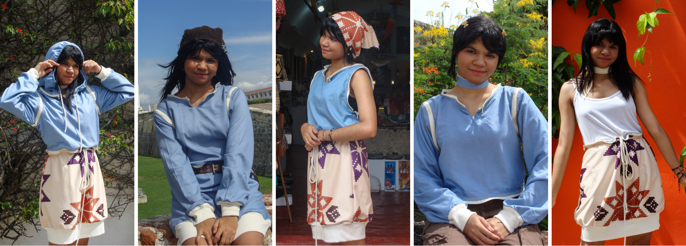

Historia de Entrelazados
La moda habla de quiénes somos y de lo que decidimos preservar. — Niel C.
Entrelazados surge como una respuesta crítica al fast fashion, proponiendo repensar la moda desde la descolonización, la sostenibilidad y la valoración del patrimonio colombiano. Inspirado en artesanías tradicionales como las mochilas Wayuu y Arhuaca, la Ruana, el Mopa-Mopa y el Sombrero Vueltiao.
Entrelazados abstrae sus valores simbólicos y formales para reinterpretarlos en un lenguaje contemporáneo, dando como resultado una colección multifuncional, reversible y elaborada con materiales reutilizados de talleres de costura, diseñada para adaptarse a distintos contextos y extender el ciclo de vida de las prendas.